UI 13 · Split view: before and after
The ▢/▢▢ toggle at the viewport's top right, beside the camera presets (or the \ key), sets a linked view beside the scene. Both panes share the timeline and the selection; narrow screens stack the second pane below the viewport. Medium shows the selected dipole enlarged, and Light shows the pair close-up glyph, which then leaves the Selection tab; both open 1-up. Electron Spin opens 2-up with the equatorial section, and its picker swaps in the selected pair's charge motion (which moves out of Selection); the View tab's Linked 2D section checkbox is the same setting. Extended Casimir opens 2-up with the lifetime loupe, which returns to Selection when 1-up. Van der Waals Plate pressure can set Fleming's Figure 3-3 or 3-4 beside the diagram. Also: the van der Waals dock falls back to Chapter 3 when a stage change or Load leaves it on a pressure-only tab.
Real screens: "before" runs the layer below, and "after" runs this layer. Click an image to open it at full size. Regenerate with node scripts/compare-screens.mjs.
Medium · Dipole close-up

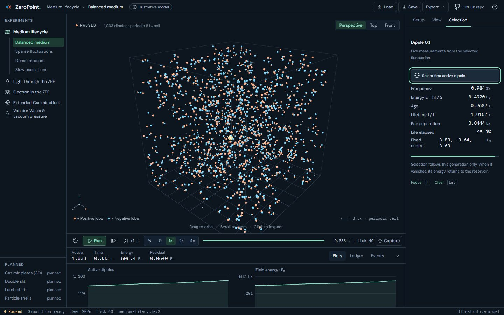

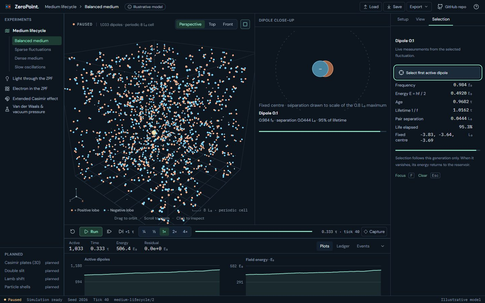
Light · Pair close-up

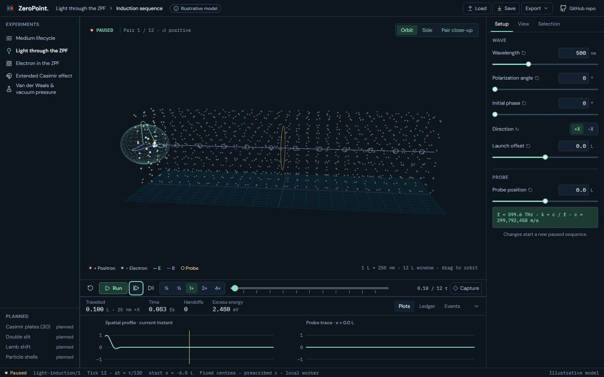

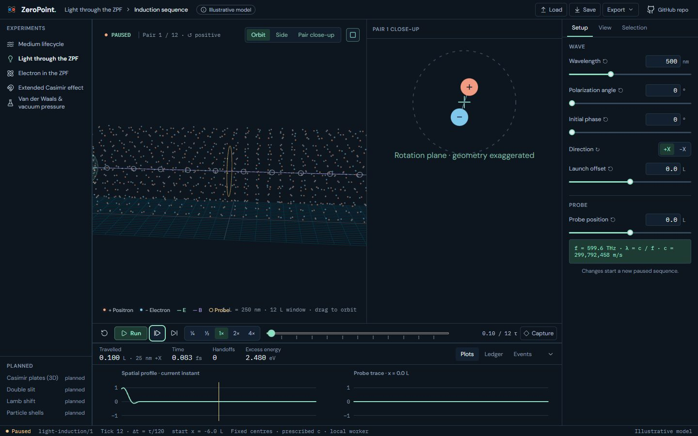
Electron · Spin: equatorial section (opens 2-up)

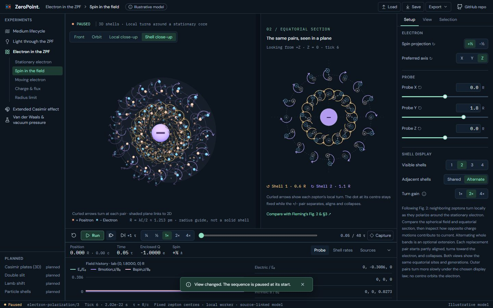

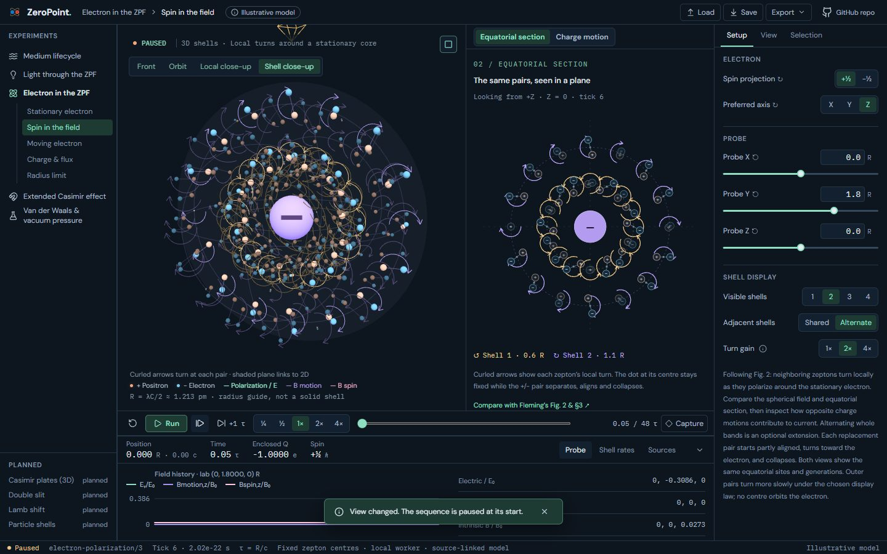
Extended Casimir · Lifetime loupe (opens 2-up)

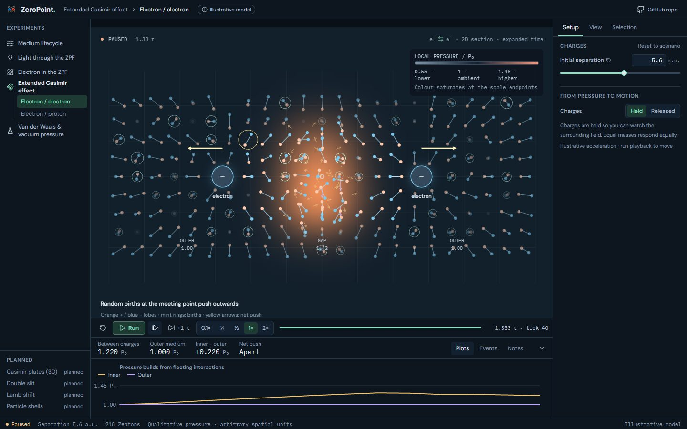

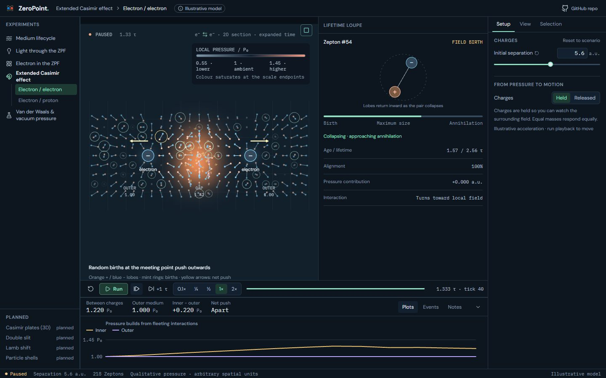
Electron · Spin on a phone (390 px): the second pane stacks below

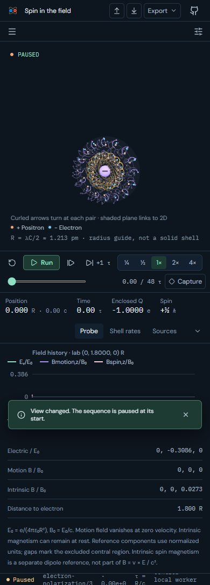

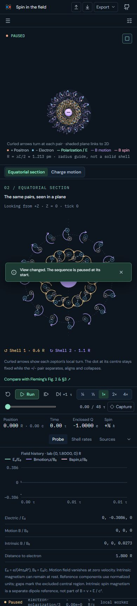
Van der Waals · Plate pressure beside Fig. 3-3

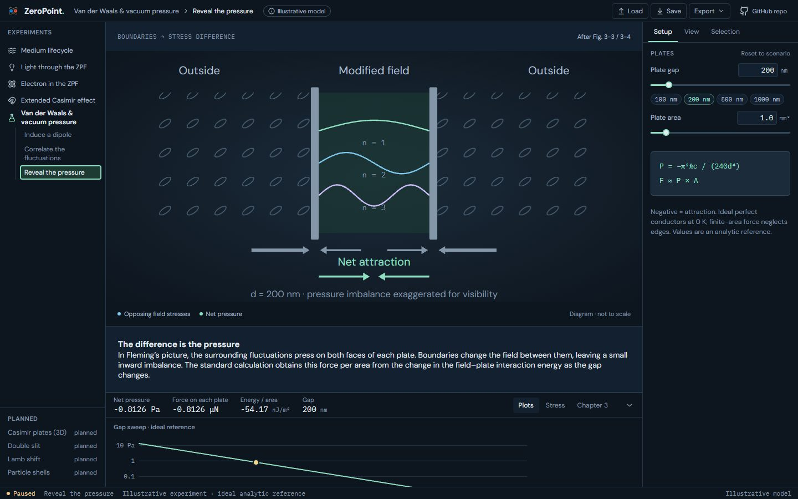

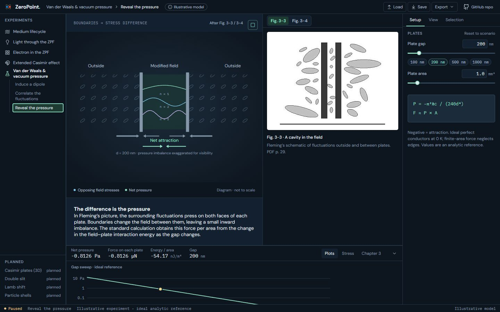